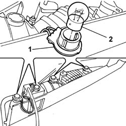

5540A50 TAIL-LIGHT BULB (ONE), LH OR RH - REPLACE
- Path
- Procedures > 55 ELECTRICAL EQUIPMENT > 5540 EXTERIOR LIGHTING > 5540A LIGHTING > 5540A50 TAIL-LIGHT BULB (ONE), LH OR RH - REPLACE
- Kind
- repair procedure (removal / refitting; the operation number is the code)
- Applies to
- all engines; all production periods
- Interactive page
- https://sloeber94.github.io/elrnDB-fUlss/en/#/179007571
Applies to: all engines; all production periods
 Removing
Removing
 Refitting
RefittingOp. 5530B56 BATTERY DRIP TRAY COVER - R.R.
- Disconnect the negative battery terminal.
Op. 7040H56 REAR SIDE PANEL FLAP (ONE) - R.R.
Op. 5540A44 L/H OR R/H TAIL LIGHT (ONE) - R+R
1. Extract the bulb holder involved turning it slightly in an anti-clockwise direction.
2. Extract the bulb by pressing it gently and turning it in an anti-clockwise direction.

Applies to: all engines; all production periods
Refitting
Removing- Fit the bulb by pressing it gently and turning it in a clockwise direction.
- Position the bulb holder involved turning it slightly in a clockwise direction.
Op. 5540A44 L/H OR R/H TAIL LIGHT (ONE) - R+R
Op. 7040H56 REAR SIDE PANEL FLAP (ONE) - R.R.
- Connect the negative battery terminal.